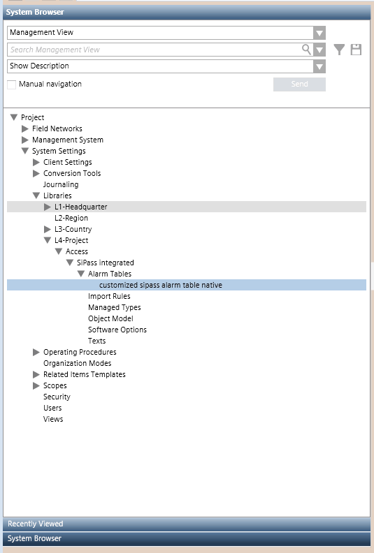
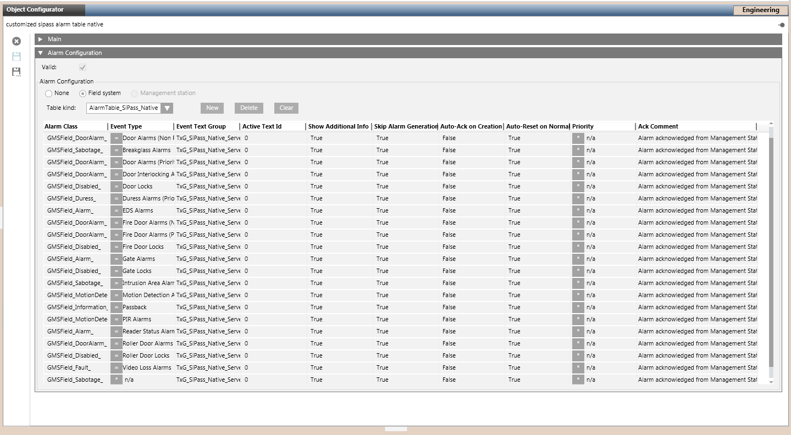

Configure a Customized SiPass Alarm Table
This procedure is part of the workflow for customizing SiPass alarm tables.
Create a Customized SiPass Library
Skip this section if the customized SiPass library structure already exists.
- Select Project > System Settings > Libraries > L1 Headquarter > Access > SiPass integrated.
- Select the Library Configurator tab.
- Click Customize the entire library to a lower level
 .
. - Click OK.
- The structure of the SiPass library is duplicated under the allowed customization level. For example, L4-Project > Access > SiPass integrated.
Create a New Alarm Table in the Customized SiPass Library
You can create multiple customized alarm tables. Skip this section if the alarm table you want to modify already exists in the customized SiPass library.
- Select […] > Libraries > L1 Headquarter > Access > SiPass integrated > Alarm Tables > [alarm table].
You can modify any alarm table. For example, select: - SiPass Alarm Table Native to display additional events from the SiPass alarm queue (for example Door Alarms, Door Locks, Passback, and so on).
NOTE: In handling the SiPass alarm queue events, the SiPass acknowledgement is supported. - SiPass Alarm Table Reader to display access events (for example Access Granted, Access Denied, and so on).
- SiPass Alarm Table Server to display the events about SiPass user actions (for example, logon, configuration change, new cardholder, and so on).
NOTE: By default, the SiPass Alarm Table Server table includes only one entry that allows you to enable all user-action events. Contact support if you want to enable a specific user-action event only. - Click Save As
 .
. - In the Save Object As dialog box, as the destination location, select the Alarm Tables block of the customized SiPass library. For example L4-Project > Access > SiPass integrated > Alarm Tables.
- Enter a name and description for the customized alarm table. For example, Customized SiPass Alarm Table Reader.
- Click OK.
- A copy of the Headquarters SiPass alarm table is added under the Alarm Tables block of the customized library.

Modify the Alarm Table in the Customized Library
- Select the alarm table in the customized SiPass library. For example, […] > Libraries > L4-Project > Access > SiPass integrated > Alarm Tables > [customized SiPass alarm table].
- In the Object Configurator tab, open the Alarm Configuration expander.
- The content of the SiPass alarm table displays.
- In the alarm table, use the Event Type column to help you select the row you want to modify.
- In each selected alarm table row, you can, for example, do the following:
- Set Skip Alarm Generation to False to enable Desigo CC event, or choose True to disable it.
- Configure Auto-Ack and Auto-Reset as needed.
NOTE: Disabled events do not generate any log in the history database. - Select the Valid check box.
- Click Save
 .
. - The customized alarm table is available. You can now apply it to either a single SiPass point, or to a customized SiPass object model.
